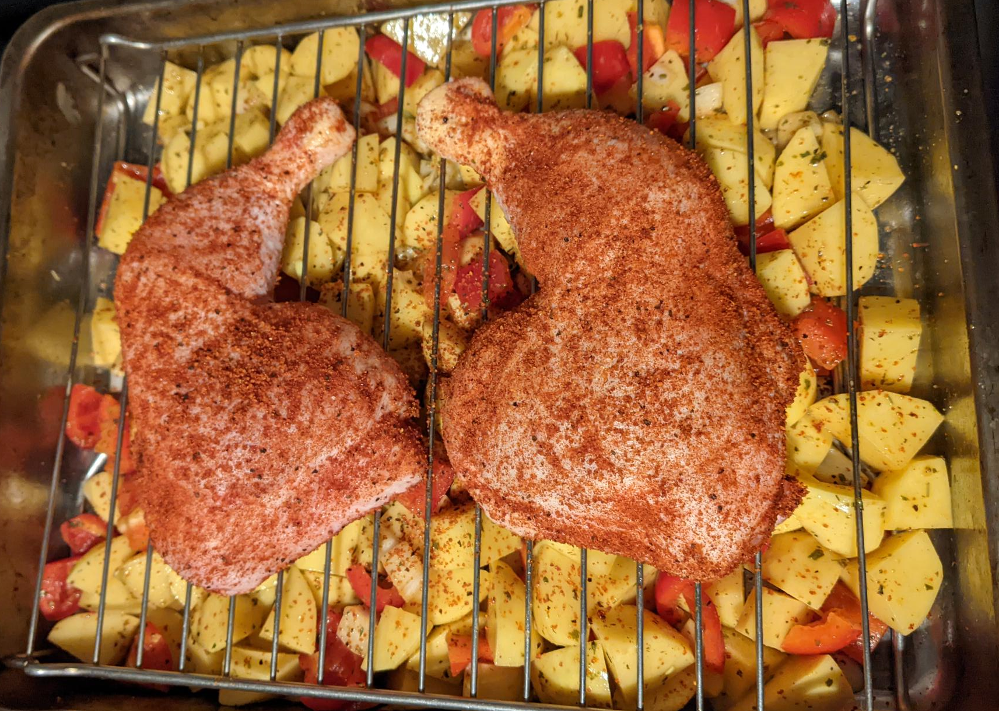

Dieses leckere Rezept ist mein absoluter Liebling. Es ist super simpel in der Zubereitung und
da alles zusammen in eine Auflaufform kommt, hält sich die Chaos-Beseitigung in Grenzen.
Zubereitungszeit: ca. 1 h
TIPP!
Kalkuliert für 2 Tage, am zweiten Tag
schmeckt das Gemüse noch besser!
Nach der Vorbereitung braucht ihr also nichts anderes tun, als warten und zwischendurch in den Ofen
schauen!
Der Bratensaft vom Hähnchen verteilt sich herrlich über dem Gemüse, das sorgt für eine besondere
Aromatik!
Wie gesagt mein absoluter Favorit!
Unbedingt ausprobieren!
*Die Garzeit hängt von der Größe eurer Hähnchenschenkel ab, daher schaut gerne zwischendurch in den Ofen und rührt zwischendurch das Gemüse um.
Jetzt sollte das ganze ungefähr so aussehen:
